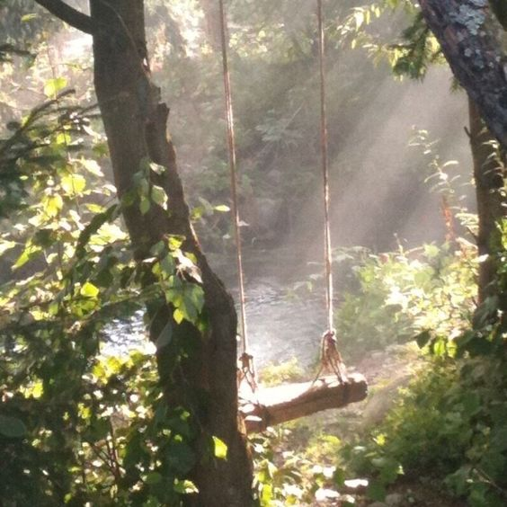

- a guide to spring -
Welcome to our webpage, dedicated to providing you with a range of exciting outdoor activities and destinations in the Pacific Northwest to help you make the most of spring. As the weather warms up and the days get longer, we understand that many people are eager to explore the great outdoors and enjoy all that this region has to offer. From hiking trails to scenic drives and outdoor events, our webpage is packed with inspiration and tips to help you plan your perfect spring adventure. Whether you're a local or a visitor, there are endless opportunities to explore the natural beauty of the Pacific Northwest. So take a look around and discover all the ways you can make your spring season unforgettable in this stunning region!

If you're looking for inspiration on where to travel on the West Coast, you've come to the right place. The West Coast of the United States is a beautiful and diverse region, spanning from the rugged coastline of Washington to the sunny beaches of Southern California. With so much to see and do, it can be hard to decide where to go. That's why we've compiled a list of four must-visit destinations to help you plan your next trip.
Whether you're looking for natural beauty, vibrant cities, or a mix of both, there's something for everyone on the West Coast. From the stunning national parks of California to the bustling streets of Seattle, there's no shortage of incredible sights to see and experiences to have.
So, if you're ready to start planning your next adventure, check out our recommendations for four places to travel on the West Coast. We hope these suggestions inspire you to explore this beautiful part of the world and make unforgettable memories along the way.
As the flowers begin to bloom and the weather warms up, there's no better way to celebrate the arrival of spring than with some fresh and uplifting music. Whether you're looking for upbeat pop hits or mellow acoustic tunes, these springy Spotify playlists are sure to put a spring in your step. From feel-good anthems to laid-back tracks perfect for a lazy afternoon, these playlists have something for everyone. So kick back, relax, and enjoy the sounds of spring with these carefully curated collections of songs that capture the essence of the season.
- makes u feel hot
- makes u feel sad
- makes u feel cold